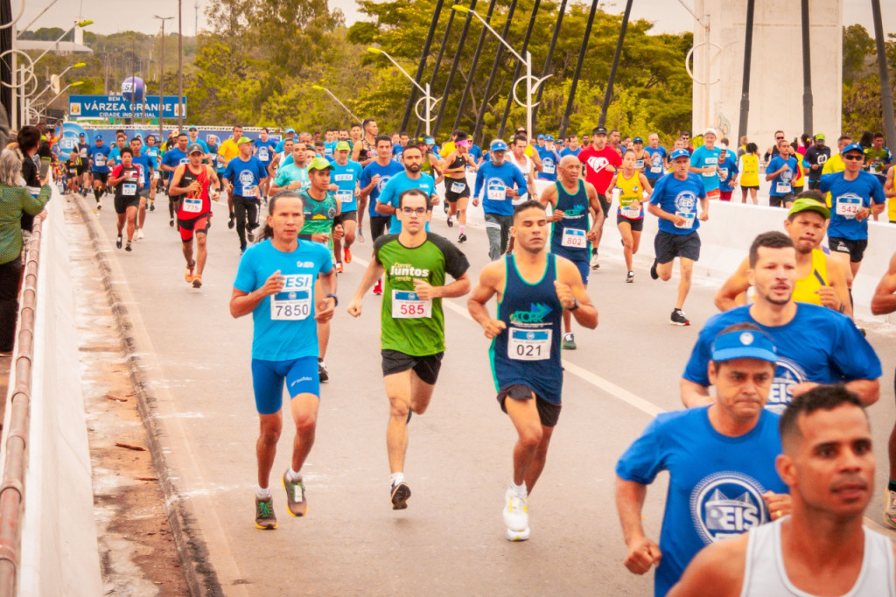
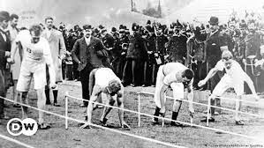

Corrida:
A corrida é uma prática corporal que envolve os músculos dos membros inferiores para promover o deslocamento do corpo.
A corrida está relacionada a diferentes aspectos da humanidade, seja enquanto forma de recreação, ritual festivo ou modalidade esportiva.
Melhora a qualidade do sono, Controle dos níveis de colesterol e triglicerídeos.

Foto de pessoas correndo em uma Maratona
A corrida tem sua origem na pré-história, quando os homens eram obrigados a caçar ou fugir de predadores.
Os primeiros relatos de corridas de rua vêm da Inglaterra, no século XVIII.
A primeira competição ocorreu em 31 de maio de 1868, no Parc de Saint-Cloud, em Paris.
A primeira competição esportiva de que se tem notícia foi uma corrida, nos Jogos de 776 A.C., na cidade de Olímpia, na Grécia.
Foto de Corredores na primeira Olimpiada da era moderna em 1986
Regras da Corrida nas Olimpiadas e no Triathlon:
-
Distância:
As corridas podem ser de curta distância ou tiro rápido, e seu percurso pode variar entre 100 e 3000 m.
-
Revezamentos:
cada um desses atletas faz ¼ da prova. Ao fim do seu percurso, o atleta entrega um bastão para o atleta seguinte.
-
Saltos:
No salto em altura, os atletas correm e saltam de costas sobre uma barra horizontal.
Foto das Regras da Corrida
Informações Adicionais:
Kathrine Switzer foi a primeira mulher a correr oficialmente uma maratona no mundo, em 1967
A prova de corrida mais antiga é a Palio Del Drappo Verde, realizada na cidade de Verona, na Itália, no ano de 1208.
A corrida surgiu como forma de o ser humano sobreviver, seja para fugir de predadores ou para caçar alimentos.
Beneficios:
-
Estimular a formação de neurônios e melhorar a memória.
-
Melhorar a respiração.
-
Proteger de doenças como o câncer, doenças cardiovasculares.

Foto Beneficios da Corrida.
Curiosidades do Cilismo:
-
A corrida recreativa se popularizou nos anos 1970, após os Jogos Olímpicos de Munique (1972). Foi a partir disso que a maratona também passou a ter mais relevância.
-
Nas Olimpíadas, a maratona só entrou como modalidade feminina em 1984. Até então, acreditava-se que as mulheres não tinham capacidade física para provas de resistência. A prova mais longa que as mulheres participavam até este ano era a de 1500 metros.
-
O nome “maratona” vem de uma lenda grega.